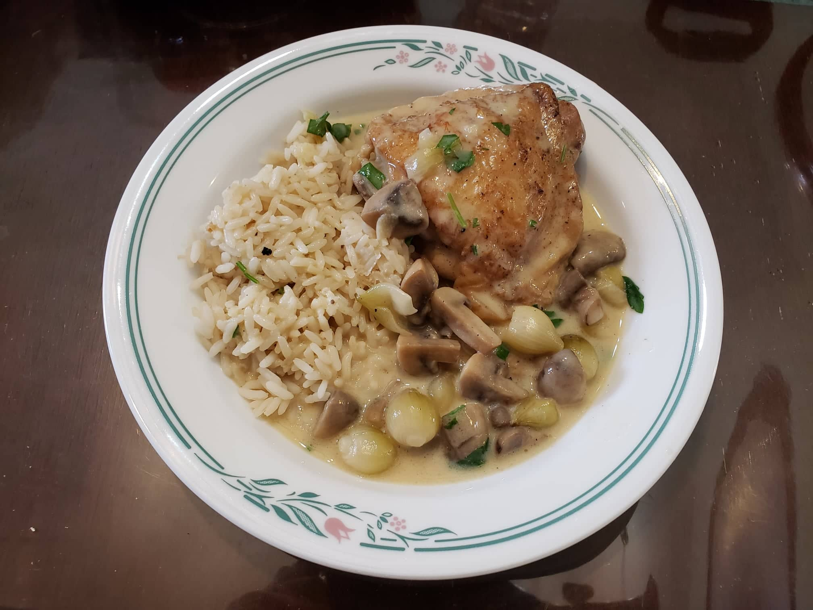

Chicken Fricassée

Ingredients:
- 3 lb Chicken thighs, bone-in and skin-on, about 6 thighs
- Salt, to taste
- Pepper, to taste
- 4 tbsp Butter
- 1-2 cups Peeled pearl onions
- 8 oz Button mushrooms, quartered
- 2 cloves Garlic, roughly minced
- 2 tbsp Flour
- 1 cup White wine
- 3 cups Low sodium chicken broth
- 1-3 tsp Lemon juice
- 1 tsp Sugar
- 3 sprigs Thyme
- 3 sprigs Parsley
- 1 Bay leaf
- 2 Egg yolks
- 6 tbsp Heavy cream
- 2 tbsp Parsley, chopped
- 2 tbsp Butter
Instructions:
- Pat dry the chicken thighs and season with salt and pepper to taste. Let rest while preparing the other ingredients.
- Heat the butter in a very large skillet over medium high/high heat. In batches add the chicken, skin side down, and let it sear until it releases from the pan. Flip and sear the other side. The chicken does not need to cook all the way. Remove the chicken from the pan and reserve.
- Reduce the heat to medium and add the mushrooms and onions to the skillet. Sauté for about 4 minutes, then add the garlic. Sauté for another minute and then mix in the flour. Cook for another minute while stirring well.
- Add the white wine and let it cook for a few minutes or until most of the alcohol has cooked out. Then pour in the broth, lemon juice, sugar and stir. Add in the thyme sprigs, parsley sprigs, and the bay leaf.
- Add the chicken back to the skillet in a single layer, along with any juices that have accumulated on the plate. Cover and simmer for 25-30 minutes until the chicken is cooked through.
- Taste and adjust seasoning as needed. Whisk the egg yolks with the heavy cream and temper them by very slowly adding up to 1/2 cup of the sauce. Stir the egg mixture and remaining 2 tbsp of butter into the fricassée. If it is difficult to mix with the chicken in the pan, temporarily remove the chicken to mix the sauce and then add the chicken back in. Remove from heat and garnish with parsley.